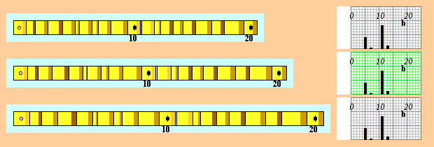
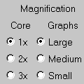
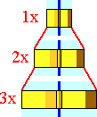

Relative Scale of Skeleton Plots
Trees living within a homogeneous stand or forest:- Usually exhibit the same relative pattern of growth variation through time, BUT
- Often have absolute growth rates that differ substantially due to living in different microsites:
- Difficult to compare the ring-growth variation of two or more specimens from actual wood samples
- For example, see figure:

- All three samples above have exactly the same pattern of variation
- Top sample has a growth rate less than that of the middle sample
- Middle sample has a growth rate less than that of the bottom sample
Solution: Dendrochronologists can make skeleton plots to standardize scales:
- Represent growth variation of samples onto separate strips of graph paper
- Equalize the absolute scales ring growth
- Easily compare growth variation of two or more specimens
- Have the same relative scale
- Easy to compare to one another
- Clearly show the same pattern of variation of each sample:
| When you try skeleton plotting for yourself, you can move the virtual core left and right: |
|---|
|
Note: The virtual core comes with every 10th ring prenumbered -- which won't be true in real life, so number your wood carefully!
| When you try skeleton plotting for yourself, you can change the scales of the graphics: | ||
|---|---|---|
 |
|
 |